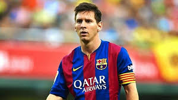

Leandro "godofjr" Junior, amapaense, começou jogar R6 com 9 anos (2016) na temporada 2 (Skull rain) pegando ouro na sua estreia jogando partida por colocação
Na sua segunda temporada jogando ele pegou platina pela primeira vez.Nas proximas temporadas ele continua pegando platina, ate que, quando estava o ps4 dele queima e ele fica meses sem jogar e voltar no fim de ano, quando ele voltou a jogar, ele nao tinha ninguem para jogar com isso ele ficou jogando solo durante meses,
Abaixo uma imagem meramente ilustrativa 👽
